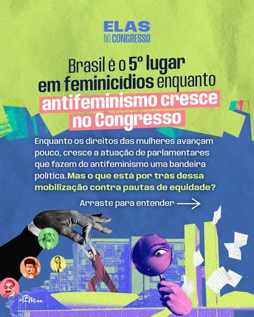

Campanhas antifeministas ganham espaço na internet e preocupam especialistas

fonte: Revista AZMina
Campanhas antifeministas ganham espaço na internet e preocupam especialistas
Nos últimos anos, conteúdos contra o feminismo e contra a igualdade entre homens e mulheres passaram a aparecer com mais frequência nas redes sociais. Muitas vezes, essas mensagens são apresentadas como memes, piadas, vídeos de “motivação” ou opiniões sobre relacionamentos, o que pode fazer com que discursos preconceituosos pareçam apenas brincadeiras ou conselhos.
Esse conjunto de comunidades e conteúdos é frequentemente chamado de “machosfera”. Segundo a ONU Mulheres, alguns desses espaços começam abordando assuntos como relacionamentos, autoestima ou dificuldades enfrentadas pelos homens, mas podem acabar promovendo ideias de superioridade masculina, submissão feminina e oposição aos direitos das mulheres.
No Brasil, uma pesquisa da Universidade Federal da Bahia analisou 47.018 imagens consideradas misóginas. O estudo mostrou que mais de 90% delas não tinham conteúdo sexual explícito e que muitas utilizavam memes, montagens e humor para espalhar mensagens de desprezo ou desvalorização das mulheres.
O problema não fica somente na internet. De acordo com a ONU Mulheres e o UNICEF, conteúdos misóginos podem influenciar a maneira como adolescentes enxergam os relacionamentos e os papéis de homens e mulheres. Por isso, as organizações defendem que famílias e escolas conversem com os jovens e estimulem o pensamento crítico sobre aquilo que aparece nas redes.
A discussão também envolve a violência digital. Em 2026, o Ministério das Mulheres lançou a campanha “O Digital é Nosso Lugar”, destacando que ameaças, perseguições, humilhações, exposição e outras formas de violência contra mulheres no ambiente virtual podem causar consequências reais fora da internet.
Diante disso, especialistas defendem que é importante observar o conteúdo antes de compartilhá-lo, principalmente quando uma “piada” ou tendência apresenta a desvalorização de um grupo como algo normal. A internet pode ser um espaço de informação e debate, mas também exige responsabilidade para que discursos de ódio não sejam tratados como simples entretenimento.
Fontes principais: ONU Mulheres, UNICEF, Ministério das Mulheres e pesquisa da Universidade Federal da Bahia.
@v9xgury